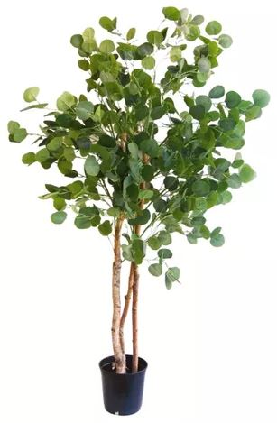

Con vientos en el mes de agosto, y la época de lluvias es de octubre a marzo, lo cual se aprovecha para la agricultura con sembríos de maíz, papas, frijoles, arvejas habas, y linaza, así como una variedad de hortalizas, entre otros productos. Plantas industriales: eucalipto, níspero, grama, retama, molle, quishuar, guindas, aliso, chinche, malco, chilca, ortiga, maguey.
La imagen anterior representa la planta de eucalipto.